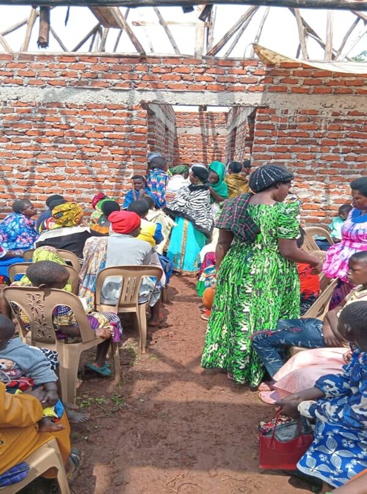
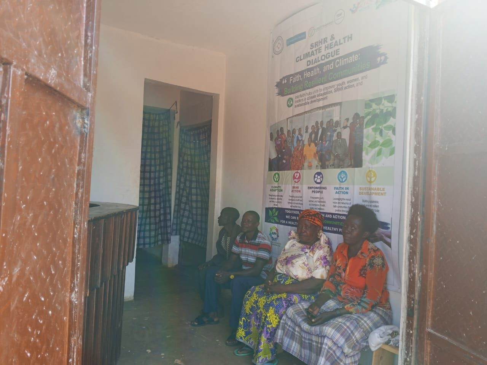
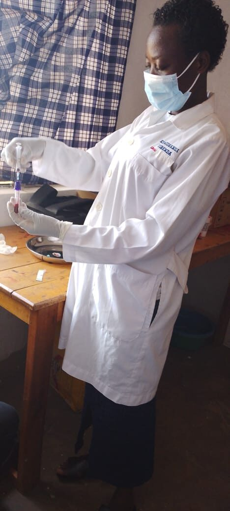
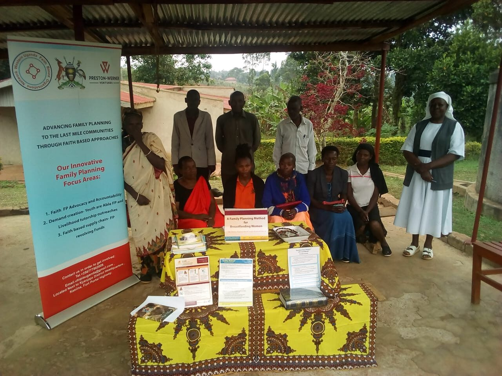
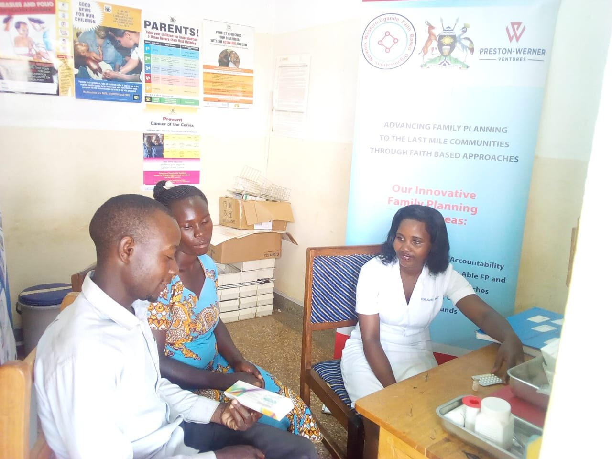
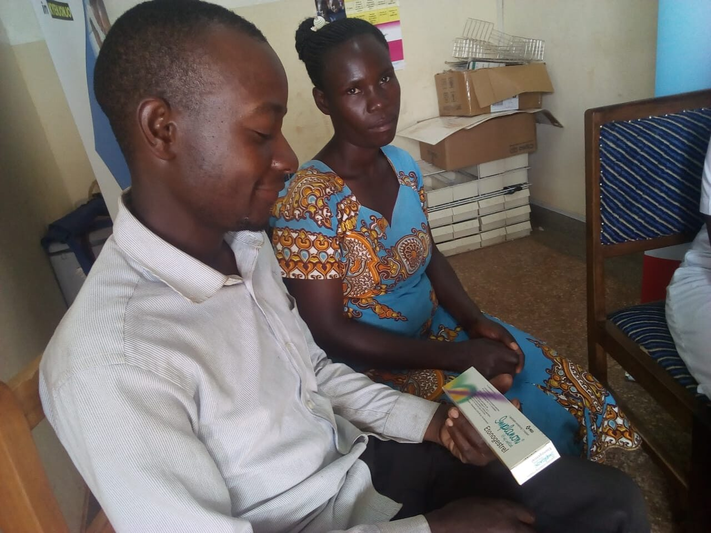

Home / Health Facility
Program 2 · Flagship clinical infrastructure
Caren McNelly McCormack Women & Children Health Facility
Last-mile clinical excellence and climate-health resilience. Health is the central outcome of sustainable development.

Rural Health Centre IV · Kigoba (Nsinde), Kyenjojo
Built where mothers and children need it most
Anchored at our completed rural Health Centre IV in Kigoba (Nsinde) Village and integrated with the Interfaith Health 52 digital predictive mapping model across all 10 district hubs, this flagship clinical infrastructure eliminates reproductive, pediatric and psychiatric healthcare barriers in Western Uganda.
“This facility is located in a village, behind a village, within a village—built right where mothers and children need it most.”
Rev. Atuhaire Moses, Founder & Executive Director, WUFBON

Services
What the facility delivers
Maternal, neonatal & pediatric excellence
Premier maternity care, obstetric fistula treatment, cervical cancer screening, dental care and uninterrupted childhood immunization supply lines.
Core HIV/AIDS & SRHR defense
Trusted, stigma-free clinical pathways for Antiretroviral Therapy (ART), youth-friendly reproductive counseling, post-abortion care, and safe, legal reproductive health services.
Climate-induced health emergency infrastructure
A dedicated 4WD rugged emergency ambulance fleet and regular mobile clinical outreaches into isolated settlements overcome rural transit barriers.
Integrated mental health & nutrition
Trauma-informed psychiatric counseling alongside a “Nutrition-Prescription Loop” that detects household malnutrition early through mobile health apps and distributes climate-resilient organic seeds to recovering mothers and HIV key populations.
HNAP/HDAP policy localization
Building on our sub-national policy record to make Kyenjojo Uganda's first district to adopt and fund a decentralized Health District Adaptation Plan (HDAP), with ring-fenced local government funding for climate-health resilience.
Community governance
Governed by a 9-member Committee of Village Elders in Kigoba (Nsinde), institutionalizing indigenous ownership, transparent drug stewardship and direct accountability to rural mothers and families.
Origins · “Irwaaro Lyaitu” (Our Health Facility)
Indigenous origins & founder sacrifice
Born from the indigenous community spirit of “Irwaaro Lyaitu”, the facility represents a convergence of grassroots land stewardship, personal founder sacrifice and international faith solidarity. Local village elders in Kigoba (Nsinde) donated the rural land parcel to bring life-saving maternal and pediatric services into an underserved agrarian community.
Founder Rev. Atuhaire Moses, himself a survivor of severe childhood illnesses including malaria, typhoid, diphtheria and meningitis, sold his personal urban plot of land and private vehicle to finance site clearing, local brick molding and the raising of the initial foundation walls. International partners and faith allies then joined WUFBON to complete, equip and commission the multi-wing complex, formally renamed in November 2026 in honor of Caren McNelly McCormack.

- Classification
- Registered Rural Health Centre IV Complex
- Outpatient department
- Reception & Triage, Consultation Room, Urgent Treatment Area, Diagnostic Laboratory, Pharmacy, Medical Supply Store
- Maternity
- Sterile Maternity Delivery Suite
- Inpatient
- 25-bed recovery wards
- Medical team
- 1 Medical Doctor, 1 Clinical Officer/Dentist, 1 Registered Midwife, 4 Nurses, delivering 24/7 care
- Location
- Kigoba (Nsinde) Village, Kyongera Parish, Kyarusozi Sub-County, Kyenjojo District
Facility photos
Inside the facility







Caren McNelly McCormack Women & Children Health Facility
Give directly to the hospital
Your gift helps equip clinical wards, expand the 4WD ambulance fleet and keep free care open for vulnerable mothers and children in Kigoba (Nsinde). Donations go through our verified Every.org fundraiser.